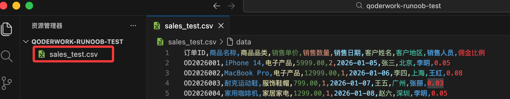
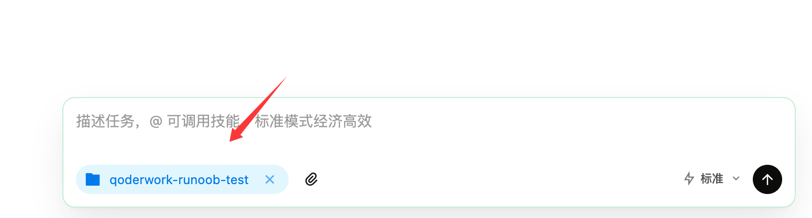
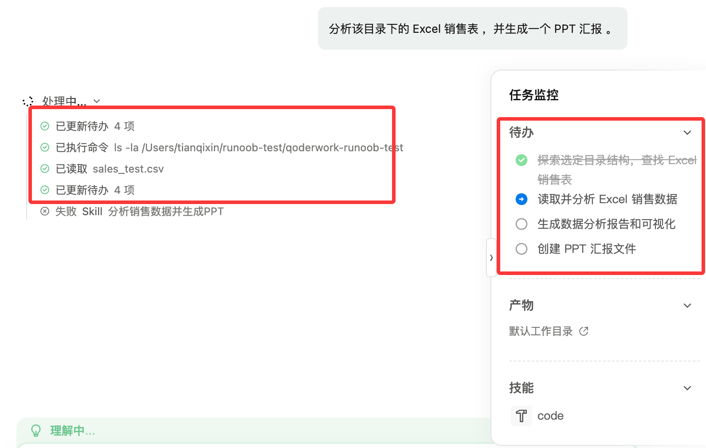
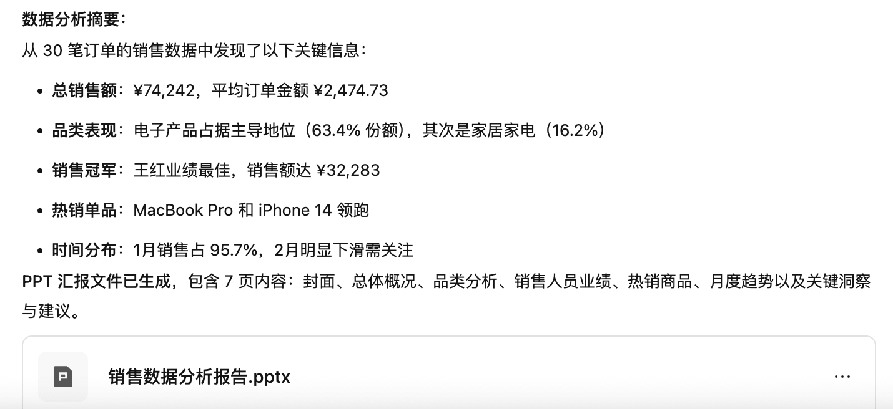
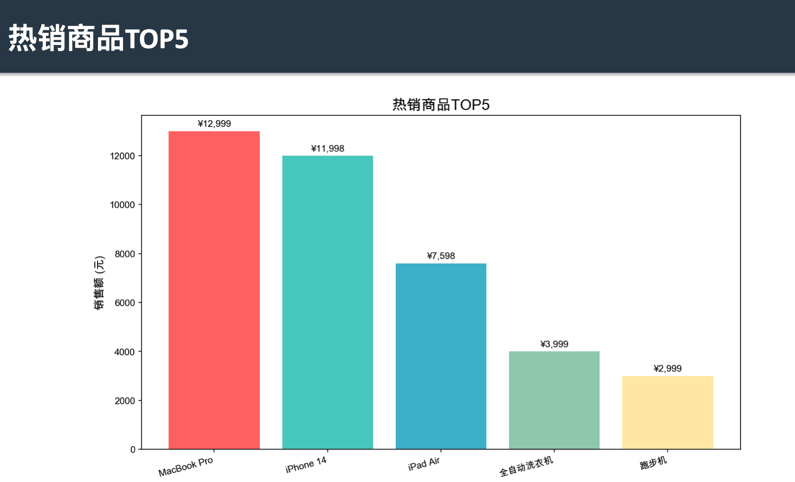
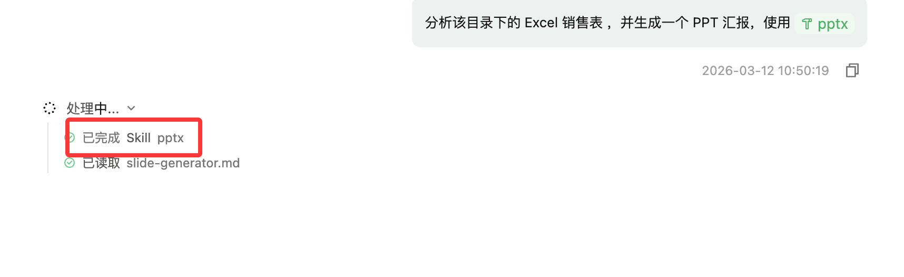

QoderWork チュートリアル
OpenClaw は強力ですが、実は敷居が高いです。コマンドラインを理解する必要があり、node.js などのインストールや各種設定が必要で、技術がなければなかなか扱えません。
阿里巴巴がデスクトップ向け AI Agent -- QoderWork を出しました。これははるかに簡単で、ダウンロード後すぐに使えます。コマンドラインを理解する必要はなく、ソフトウェア内でさまざまな skills をインストール・設定できます。
私たちは要件を説明するだけで、QoderWork が自動的に手順を分解し、ソフトウェアを呼び出し、実行して結果を納品します。
- 従来の AI ツール：質問すると、それに答えるだけ。実際の作業は自分でやる必要があります。
- QoderWork：要件を伝えると、結果を納品してくれます。

登録完了後、右上隅のダウンロードボタン：

選択QoderWorkオプション。お使いのPCのOSに応じてインストーラーをダウンロードします：

ダウンロード後、ダブルクリックしてインストールします。インストール完了画面は以下の通りです：

QoderWork は以下が可能です：
- 自然言語のタスクを理解
- 実行手順を自動的に計画
- ローカルファイルやアプリケーションを呼び出し
- 複数ステップのタスクを自動的に完了
代表的な用途：
| シナリオ | 説明 |
|---|---|
| ファイル整理 | ファイル種別を自動認識し、プロジェクトファイルをスマートに整理 |
| 写真管理 | 時間・場所・テーマに基づいてローカル写真を自動分類・整理 |
| データ分析 | データ構造を分析し、統計レポートと可視化チャートを生成 |
| ドキュメント作成 | レポート作成、プレゼンテーション資料作成、表データ処理 |
| リサーチ統合 | 複数ソースの情報を集約し、重要なインサイトを抽出 |
例えば、次のように一言言うと：
分析这个 Excel 销售表，并生成一个 PPT 汇报。
QoderWork は自動的に以下を行えます：
- Excel を読み取り
- 販売データを分析
- チャートを生成
- 分析レポートを作成
- PPT を生成
プロセス全体を一度に完了します。
まず QoderWork の作業ディレクトリを作成しましょう：
mkdir qoderwork-サンプル-testそのディレクトリに入ります：
cd qoderwork-サンプル-test
テストデータを作成しましょう。以下の内容をコピーして、メモ帳/テキストエディタに貼り付け、保存します：sales_test.csvファイル：
订单ID,商品名称,商品品类,销售单价,销售数量,销售日期,客户姓名,客户地区,销售人员,佣金比例 OD2026001,iPhone 14,电子产品,5999.00,2,2026-01-05,张三,北京,李明,0.05 OD2026002,MacBook Pro,电子产品,12999.00,1,2026-01-06,李四,上海,王红,0.08 OD2026003,耐克运动鞋,服饰鞋帽,799.00,1,2026-01-07,王五,广州,张丽,0.03 OD2026004,家用咖啡机,家居家电,1299.00,1,2026-01-08,赵六,深圳,李明,0.05 OD2026005,无线耳机,电子产品,899.00,3,2026-01-09,钱七,杭州,王红,0.08 OD2026006,羽绒服,服饰鞋帽,1599.00,1,2026-01-10,孙八,成都,张丽,0.03 OD2026007,全自动洗衣机,家居家电,3999.00,1,2026-01-11,周九,武汉,李明,0.05 OD2026008,iPad Air,电子产品,3799.00,2,2026-01-12,吴十,西安,王红,0.08 OD2026009,跑步机,运动器材,2999.00,1,2026-01-13,郑一,南京,张丽,0.03 OD2026010,智能手表,电子产品,1999.00,1,2026-01-14,王二,天津,李明,0.05 OD2026011,羊毛衫,服饰鞋帽,599.00,2,2026-01-15,李三,重庆,王红,0.08 OD2026012,空气净化器,家居家电,1899.00,1,2026-01-16,张四,青岛,张丽,0.03 OD2026013,游戏手柄,电子产品,399.00,4,2026-01-17,王五,大连,李明,0.05 OD2026014,登山包,运动器材,499.00,1,2026-01-18,赵六,厦门,王红,0.08 OD2026015,电饭煲,家居家电,899.00,2,2026-01-19,钱七,福州,张丽,0.03 OD2026016,蓝牙音箱,电子产品,599.00,3,2026-01-20,孙八,长沙,李明,0.05 OD2026017,牛仔裤,服饰鞋帽,299.00,2,2026-01-21,周九,沈阳,王红,0.08 OD2026018,微波炉,家居家电,799.00,1,2026-01-22,吴十,哈尔滨,张丽,0.03 OD2026019,健身器材套装,运动器材,1599.00,1,2026-01-23,郑一,石家庄,李明,0.05 OD2026020,平板电脑,电子产品,2799.00,1,2026-01-24,王二,太原,王红,0.08 OD2026021,运动T恤,服饰鞋帽,199.00,5,2026-01-25,李三,郑州,张丽,0.03 OD2026022,吸尘器,家居家电,1499.00,1,2026-01-26,张四,济南,李明,0.05 OD2026023,电脑显示器,电子产品,1299.00,2,2026-01-27,王五,合肥,王红,0.08 OD2026024,瑜伽垫,运动器材,199.00,3,2026-01-28,赵六,南昌,张丽,0.03 OD2026025,茶叶礼盒,食品饮品,399.00,3,2026-01-29,钱七,昆明,李明,0.05 OD2026026,皮鞋,服饰鞋帽,899.00,1,2026-01-30,孙八,兰州,王红,0.08 OD2026027,电烤箱,家居家电,699.00,1,2026-01-31,周九,银川,张丽,0.03 OD2026028,机械键盘,电子产品,499.00,2,2026-02-01,吴十,西宁,李明,0.05 OD2026029,篮球,运动器材,199.00,2,2026-02-02,郑一,乌鲁木齐,王红,0.08 OD2026030,坚果礼盒,食品饮品,299.00,6,2026-02-03,王二,拉萨,张丽,0.03

次に QoderWork を開き、左下隅の作業ディレクトリ選択を qoderwork-サンプル-test に設定します：

入力内容：
分析该目录下的 Excel 销售表 ，并生成一个 PPT 汇报 。

上の図からわかるように、QoderWork は手順を分析し、タスクの実行を開始しました。
実行が完了すると、qoderwork-サンプル-test ディレクトリに ppt ファイルが生成されます。プロンプトは以下の通りです：

PPT を直接開いて確認できます。良い仕上がりです：

さらに、入力ボックスで@を使用して、ppt 生成専用の skills を呼び出して生成できます：

生成プロセスでその Skills が使用されます：

QoderWork と他の AI 製品との違い
ChatGPT / Claude との違い
| タイプ | ChatGPT / Claude | QoderWork |
|---|---|---|
| 本質 | AI 対話アシスタント | AI デスクトップ実行エージェント |
| 能力 | アドバイスを提供 | タスクを直接実行 |
| ファイル処理 | 手動アップロード | ローカルに直接アクセス |
| 自動化 | 弱 | 强 |
| 使用シーン | 執筆、Q&A | 実際のオフィス業務 |
簡単に言うと：
- ChatGPT は頭脳です。
- QoderWork は手足です。
OpenClaw / Claude Code との関係
たとえばAI Agent ツールの系譜の中に置くと：
| 製品 | タイプ |
|---|---|
| Claude Code | プログラミング Agent |
| OpenClaw | 自動化 Agent |
| QoderWork | デスクトップオフィス Agent |
QoderWork の位置づけは実は：デスクトップ版 AI オフィスアシスタント + 自動化 Agent
その他の拡張